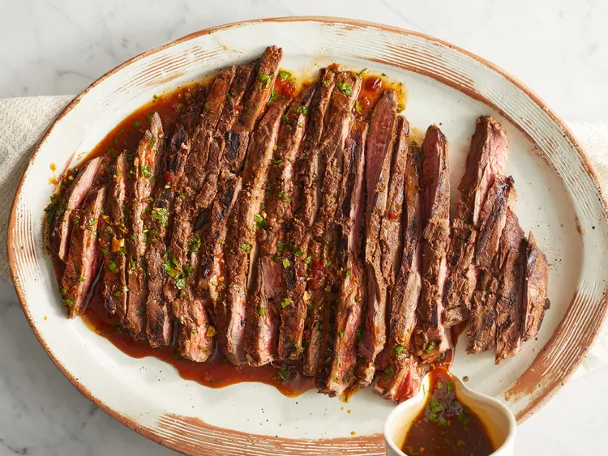

Carne Asada Marinade
A juicy and flavorful carne asada starts with a delicious carne asada marinade. This recipe begins with a 24-hour marinade to allow the flank steak to soak up all the tasty and fresh flavors before grilling.
Whether you serve it as tacos, a salad topping, or simply chow down on the tender, flavor-packed steak by itself, this will be the best carne asada you've ever experienced.
Ingredients
Marinade:
- 3/4 cup orange juice
- 1/2 cup lemon juice
- 1/3 cup lime juice
- 1 bunch fresh cilantro, chopped
- 1/2 cup soy sauce
- 4 cloves garlic, minced
- 1 tablaespoon chili powder
- 1 tablespoon ground cumin
- 1 tablespoon ground paprika
- 1 tablespoon ground black pepper
- 1 teaspoon finely chopped canned chipotle pepper
- 1 teaspoon dried oregano
- 1/2 cup olive oil
Carne Asada:
- 3 pounds flank steak
directions
- Combine orange juice, lemon juice, and lime juice for marinade in a large glass or ceramic bowl. Add cilantro, soy sauce, garlic, chili powder, cumin, paprika, black pepper, chipotle pepper, and oregano; stir to combine.
- Slowly whisk in olive oil until well combined. Remove 1 cup of the marinade and place in a small bowl; cover with plastic wrap and refrigerate for use after the steak is cooked.
- Place steak between two sheets of heavy plastic (resealable freezer bags work well) on a solid, level surface. Firmly pound steak with the smooth side of a meat mallet to a thickness of 1/4 inch.
- After pounding, poke steak all over with a fork. Place steak in the marinade in the large bowl, cover, and marinate in the refrigerator for 24 hours.
- When ready to cook, preheat an outdoor grill for medium-high heat, and lightly oil the grate.
- Remove steak from the marinade and shake off excess. Discard the remaining marinade.
- Cook steak on the preheated grill to desired doneness, about 5 minutes per side for medium-rare
- Remove steak from grill and slice across the grain.
- Place on a serving platter and pour the reserved, unused marinade over top. Serve immediately.
Nutrition Facts (per serving)
- Calories: 207
- Fat: 14g
- Carbs: 6g
- Protein: 15g
We invite you to savor every mouthwatering moment as you delve into the tantalizing flavors of our exquisite Carne Asada Marinade. May each tender bite, infused with the vibrant blend of citrus, aromatic herbs, and spices, transport you to a realm of culinary delight.